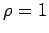

Inhalt Index DeskTop Bronstein

 Unendliche Reihen Reihen mit konstanten Gliedern Konvergenzkriterien für Reihen mit positiven Gliedern
Unendliche Reihen Reihen mit konstanten Gliedern Konvergenzkriterien für Reihen mit positiven Gliedern


Wenn für die Reihe
 |
(7.25a) |
von einem gewissen n an alle Quotienten kleiner sind als eine Zahl , dann ist die Reihe konvergent:
| (7.25b) |
Wenn diese Quotienten von einem gewissen n an größer sind als eine Zahl  , dann ist die Reihe divergent. Daraus ergibt sich: Gilt
, dann ist die Reihe divergent. Daraus ergibt sich: Gilt
| (7.25c) |
dann ist die Reihe für konvergent und für divergent. Für  kann mit dem Quotientenkriterium keine Aussage über das Konvergenzverhalten gemacht werden.
| Beispiel A |
|
Die Reihe |
| (7.26a) |
konvergiert, denn es gilt
| (7.26b) |
| Beispiel B |
|
Für die Reihe |
liefert das Quotientenkriterium wegen
| (7.27b) |
keine Entscheidung über die Konvergenz oder Divergenz der Reihe.